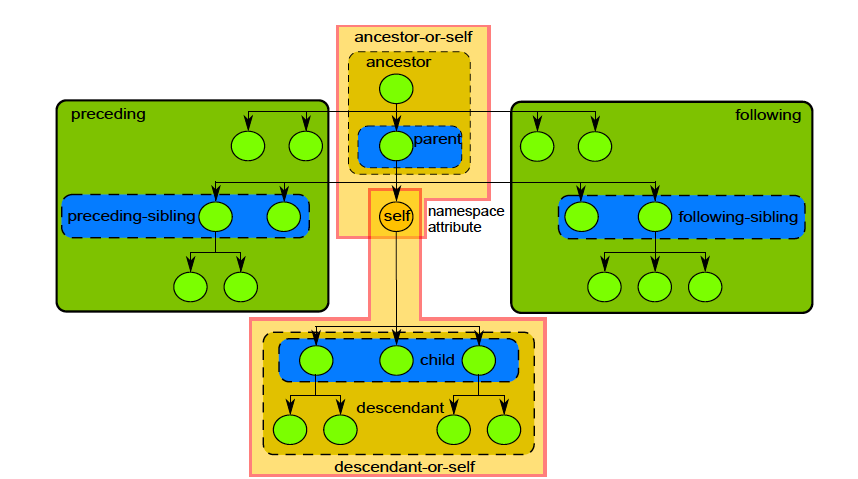

XPath - XML Path Language
XPath 2.0 contains
XPath 3.0 contains
Location path full syntax consists of:
| an axis | specifies the direction of accessing nodes from document tree |
|---|---|
| a node test | specifies the type of queried nodes |
| zero or more predicates | boolean expression filtering selected nodes specified in square brackets [ ] |
Example:
An axis – determines which direction to navigate with respect to a particular node
Node test is used to select nodes
Node test can be done by:
/concept/title)element()attribute()text()node()Predicates are used to filter nodes in a location path step
You can provide any number of predicates
Examples:
/Concept/Title[.="Introduction"]/Concept[@id="c_concept" or @id="c_concept_2"]/Concept[@id="c_concept"][./Title="Introduction"]child:: |
child axis – default axis | |
|---|---|---|
| // | descendant-or-self::node() |
context node + descendant nodes |
| . | self::node() |
context node |
| .. | parent::node() |
parent node |
| @ | attribute:: |
attribute axis |
| * | can be used as a wildcard (any element) |
List all the cars in the second section
Solution: //section[@id="section_2"]//li
List all elements with a product 1.2
Solution: //*[@product="1.2"]
predicate with a number
returns an element in position declared in the predicate
Example : /concept/conbody/section[2]
last()
returns the last element
Example : /concept/conbody/section[last()]
position()
returns elements according to their position
Example : /concept/conbody/section[position < 3]
From the list of animals, choose last but one
Solution: //section[title="Animals"]//li[last()-1]
or //section[title="Animals"]//li[4]
count
counts the number of elements
Example : count(/concept/conbody/section/p)
Count the number of all cars
Solution: count(//section[title="Cars" or title="Cars 2"]//li)
contains(string1, string2)
Checks if string1 is contained in string2. Useful in predicates
Example : contains(/concept/conbody/section/p, "Cars")
concat(string1, string2, string3, ...)
Concatanates all strings
Example : concat('This', ' is', ' a', ' string')
string-join((string1, string2, string3, ...), separator)
Joins all strings using a chosen separator
Example : string-join(('This', 'is', 'a', 'string'), " ")
substring(string1, position)
Cuts a string into two based on a position
Example : substring('Drum&Bass', 6) = 'Bass'
Concatanate titles from first and second section
Solution: concat(//section[1]/title, ' and ', //section[2]/title)
or string-join((//section[1]/title, 'and', //section[2]/title), " ")
Choose cars that contain an "o" letter
Solution: //section[title="Cars" or title="Cars 2"]//li[contains(.,'o')]
Homework
Useful links